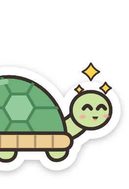

ネコに預けて、
あとで取り出す。
PawShelf は Mac のためのシェルフです。画面の端から小さなキャラクターがのぞいて、アプリを行き来するあいだ、ファイル、フォルダ、画像、リンク、テキストを預かります。
Mac App Store で近日公開
macOS 14 以降。Apple シリコンと Intel の Mac に対応しています。
使い方

タブに置く
何でも、画面の端にいるキャラクターへドラッグしてください。端まで遠いときは、ドラッグ中にカーソルを左右に振ると、すぐ横にシェルフが開きます。

そのまま作業を続ける
アプリや操作スペースを切り替えても、フルスクリーンにしても、タブは端に残ります。Mac を再起動しても項目は消えません。

ドラッグして取り出す
Finder、メール、チャット、アップロード画面に項目をドロップします。複数選んでまとめて取り出すこともできます。
預ける相棒を選ぼう
12 のキャラクターが、それぞれのやり方で物をしまいます。役に立つ習性もあります。ハムスターのほっぺを見ればシェルフの混み具合がわかり、リスは忘れられた項目を教えてくれ、ペンギンの氷はもう要らない項目を溶かして片づけます。
-


箱入りネコ
段ボール箱にものを隠しておきます
-


ほおぶくろハムスター
シェルフがいっぱいになるほど、ほっぺがふくらみます
-


どんぐりリス
忘れられたどんぐりを覚えていて、片付けを提案します
-

こおりペンギン
溶けてなくなるまで、ものを氷で冷やしておきます
-


よふかしフクロウ
夜はぱっちり、昼はうとうと
-


キラキラカササギ
キラキラしたリンクや写真を集めます
-


とってこイヌ
必要なときに、ものを持ってきてくれます
-


ポケットカンガルー
おなかのポケットに、ものを大切にしまいます
-


ペリカン
大きなくちばしを開けて、ドロップされたものを受け止めます
-


はちあしタコ
それぞれの足でひとつずつ抱えます
-


あなほりモグラ
巣穴にものをしまっておきます
-


こうらガメ
こうらの下で、ものを守ります
ステッカーにポインタを合わせて、あいさつしてみましょう。
シェルフに必要なことは、ぜんぶ
クリップボード履歴
最近コピーした 50 件がシェルフにそろっています。パスワード管理アプリが非公開としたコピーは記録しません。
新しいファイルを自動で集める
「スクリーンショット」や「ダウンロード」などのフォルダを選ぶと、新しいファイルが自動でシェルフに並びます。
画像内の文字を検索
スクリーンショットを、写っている文字で探せます。文字の認識は Mac の中で行います。
リンクのタイトルとアイコン
リンクはアドレスだけでなく、ページのタイトルとアイコンで表示されます。
最近取り除いた項目
うっかり取り除いても、シェルフの「⋯」メニューから戻せます。
プレビューと共有
スペースバーでクイックルック。AirDrop やメッセージで送ることもできます。
コレクション
関連する項目をコレクションにまとめて、ひとつずつ表示できます。
すべての操作スペースで
タブはすべての操作スペースに表示され、フルスクリーンのアプリの上にも出ます。左右どちらの端にも置けます。
VoiceOver に対応
シェルフのすべてのボタンと項目に VoiceOver のラベルがあります。
システム設定で許可するものはありません
PawShelf はアクセシビリティや画面収録の権限を求めません。App Sandbox の中で動き、あなたが渡したものだけを開きます。シェルフに置いたものは Mac の中にとどまります。